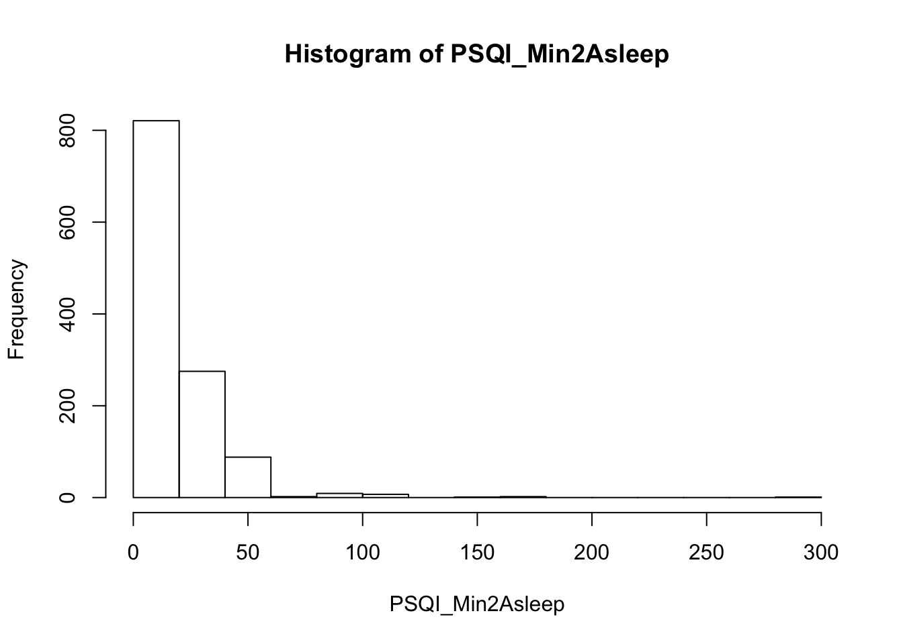
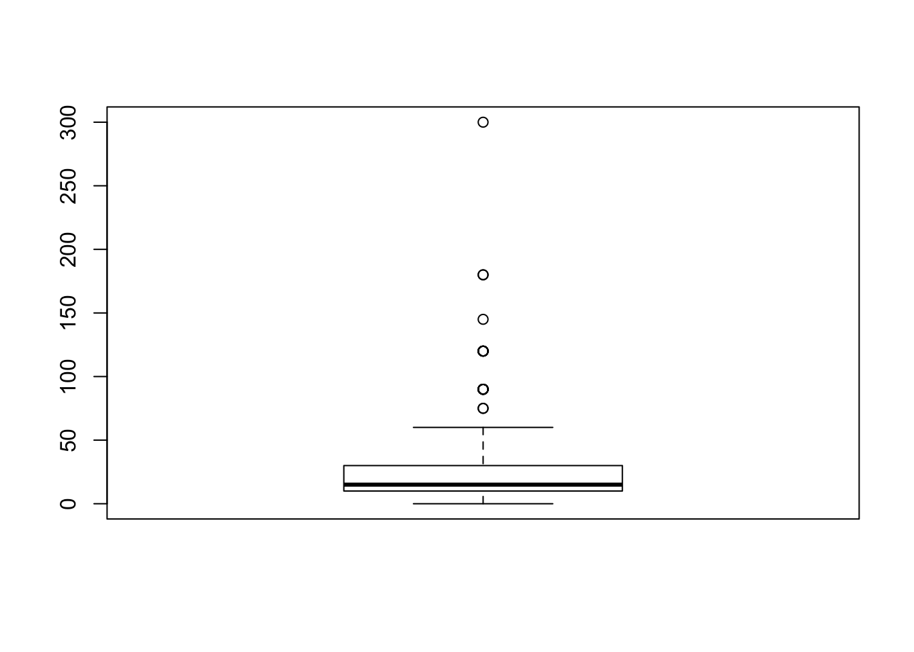
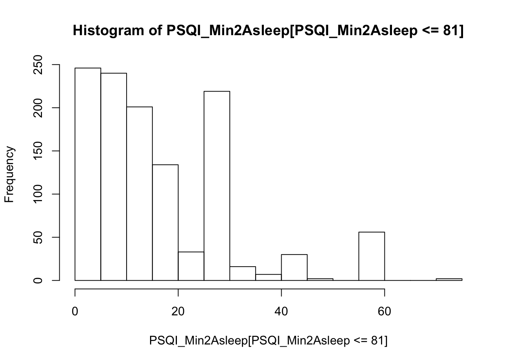
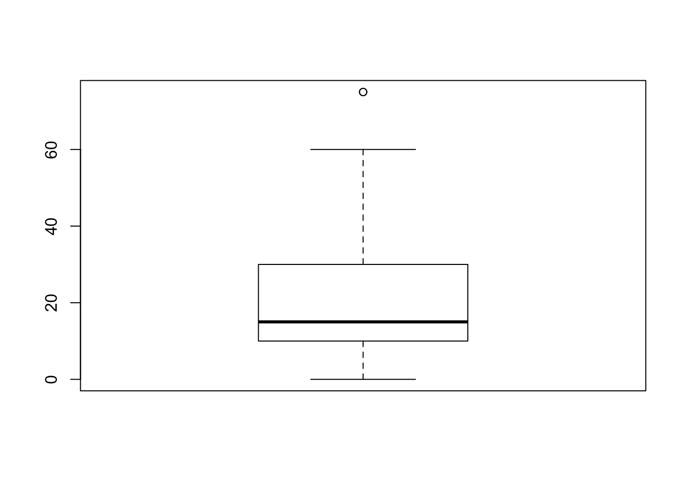
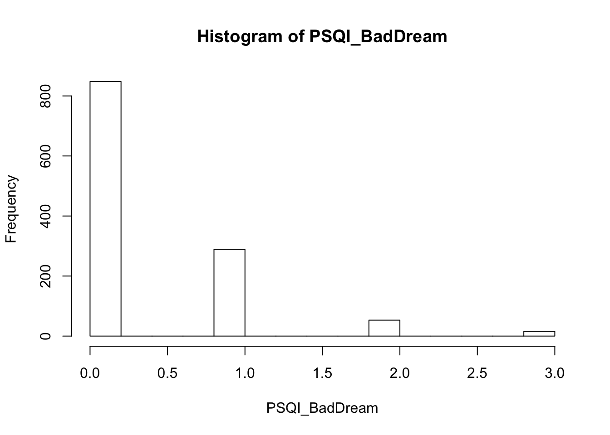
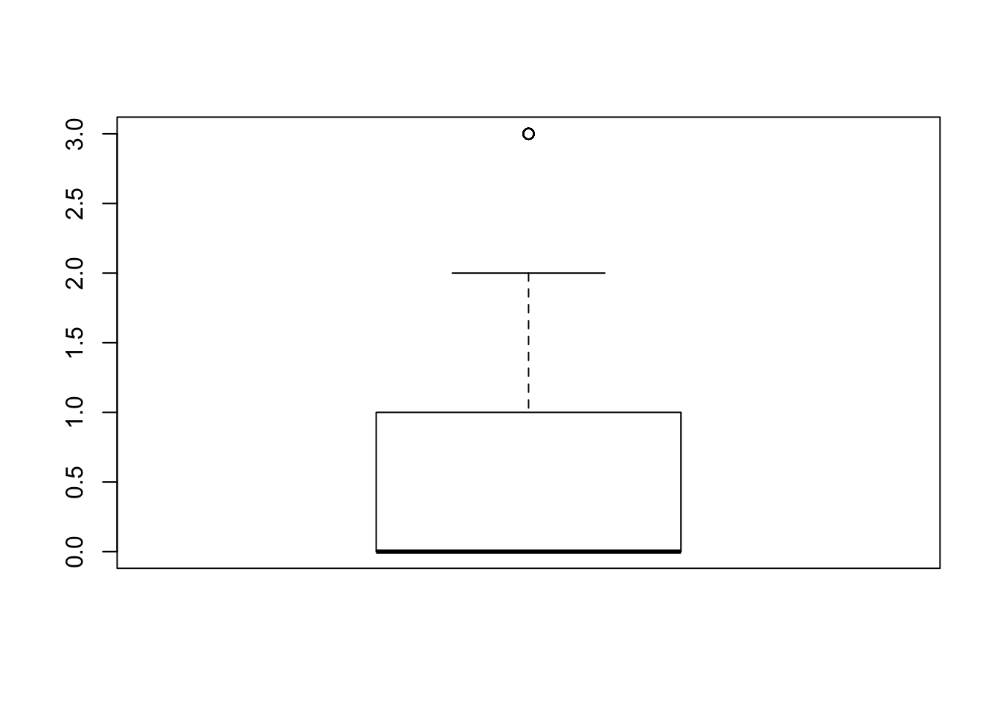
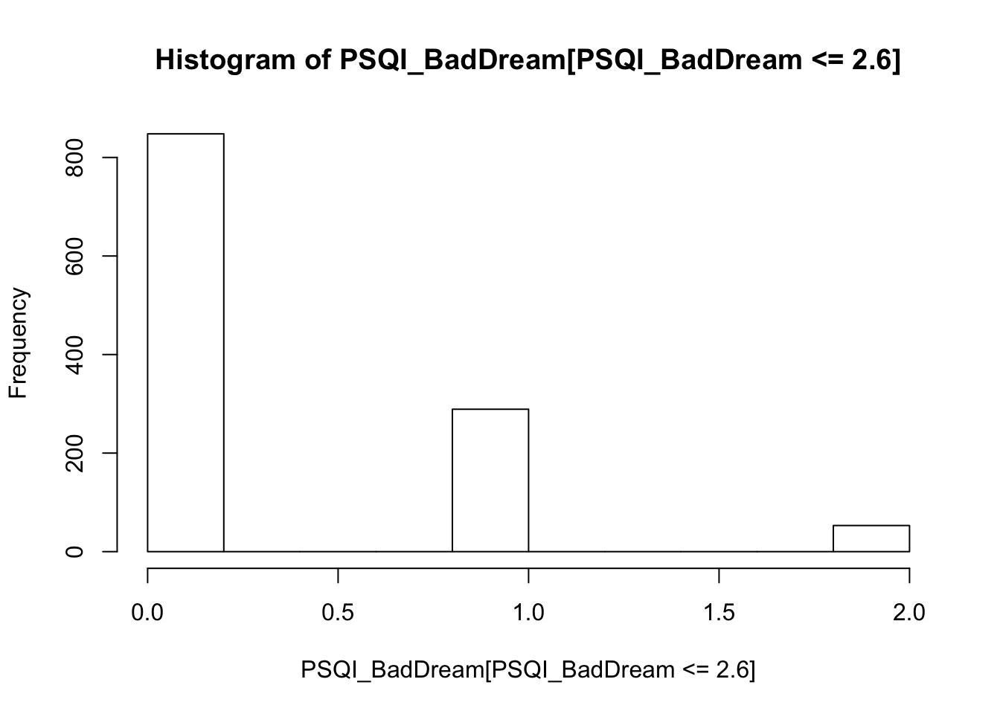
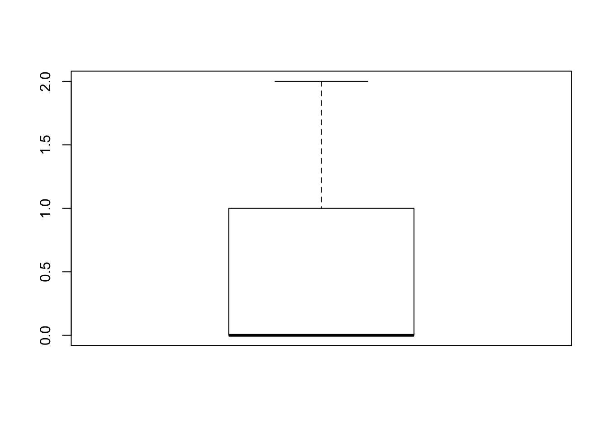

This study analyzed a subset of the Human Connectome project, the WU-Minn 2018 sample (Van Essen, 2013). It consists of 1206 subjects, 1100 of whom have complete MRI scans segmented using FreeSurfer (Fischl, 2012) and scores on various behavioral tests and self-report questionnaires. It is publically available. Volunteers in this sample took the Pittsburgh Sleep Quality Index (Buysse, 1989) questionnaire, which has measures of the number of minutes that it takes to fall asleep and number of times per night that a subject is rendered awake by bad dreams. Analysis for this data used R Studio (RStudio Team, 2016). Multiple linear regression was used to examine the relationships between left and right SFG area and the minutes until a volunteer fell asleep, and the relationships between the left and right hippocampal volume and the number of times a bad dream woke the volunteer up. Linear regression was selected as the method analysis as it was a direct means of determining the relationship between multiple independent variables with one scalar dependent variable. Dependent variable results with values more than 3 standard deviations away from the sample mean were determined to be outliers and removed. Sex was covaried in all analyses, and a measure of whole brain volume was introduced to each analysis in a second round.
hist(PSQI_Min2Asleep)
boxplot(PSQI_Min2Asleep)
hist(PSQI_Min2Asleep[PSQI_Min2Asleep <= 81])
boxplot(PSQI_Min2Asleep[PSQI_Min2Asleep <= 81])
hist(PSQI_BadDream)
boxplot(PSQI_BadDream)
hist(PSQI_BadDream[PSQI_BadDream <= 2.6])
boxplot(PSQI_BadDream[PSQI_BadDream <= 2.6])